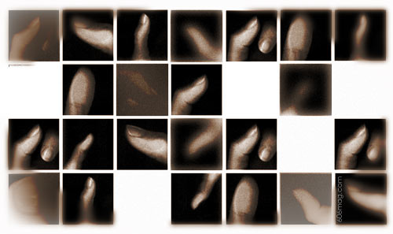

 |
Who hitchhikes nowadays? Any rational, news-reading person surely knows the hazards of entering a stranger's car. So why do it? I've amused myself with the idea of stretching my arm out, turning my fist and raising that thumb while I've waited for the bus for minutes on end. I've fantasized about getting picked up by grotesquely famous people, that some famous film director will see me standing on the street and choose me to star in his next film. But those thoughts are soon replaced by ones full of serial killers and kidnappers, so I just can't have fun with it. While I sit fantasizing about hitchhiking, Erik Rath has not only done it, but has pulled it off successfully and lived to tell about it. He's hitchhiked across Canada , Europe and in the northern border of the U.S. He therefore seemed the perfect person to probe about traveling via thumb. We stand by the side of the road at North and Clybourn Avenues as I try to mimic his perfect thumb-form. Erik begins his lesson. “I hitchhike for three main reasons,” he says. “The first is certainly the most mundane and boring, and that is to save money. No matter how you break up the costs and benefits of the situation, hitchhiking is really cheap. I would however be incredibly embarrassed if this is a primary reason for the toil that sometimes accompanies life at the side of the road. It could be described as tantamount to driving 20 miles to save a dime on groceries. It just wouldn't be worth it.” It's obvious that money isn't the only draw; the thrill of the ride holds some mystique as well. Rationalizing hitchhiking as a means to get famous isn't quite an accurate analogy either. I look mournfully his way. “My thumb doesn't want to curl backwards. Maybe a bit of plastic surgery is needed?” I ask. Rath smiles, but not too encouragingly. “The second reason I choose hitchhiking to get around is that it's the best way I've found to improve my perception of other people,” he says. “Everyone who picks me up is pretty much a saddled, dazzling knight who saves my ass from the elements and speeding trucks on the road. In general, the right turn signal is the hitchhikers' halo and the people behind the wheel no matter how odd or socially awkward are pretty angelic.” Immediately I imagine being stranded in the desert, dying of thirst, and falling for mirages of turning signals. So who really dares to pick up a hitchhiker? How daunting it is for a hitchhiker to decide and actually go through with it? What about the other end of the relationship, the driver? And so begins lesson number three, stating, “My third reason is simply that it is the ultimate voyeuristic form of traffic. It is pretty obvious by seeing the way people deck out their cars with fancy seat covers, stereos, DVD players, tacky rear view danglers and any other form of personalizing detritus that the car is their domain. It's like being invited into the living room of complete strangers. I enjoy sitting down and looking at the little flourishes and ornamentation or even just the accumulated shit. It's the same thrill that I'm sure fills the field of anthropology.” “I own a bike. A hitchhiker could fit in my basket!” I emphatically insert. Rath laughs, lowers his arm and cracks his thumb joint. “I consider some of my conversations on the road as the most enjoyable and informative conversations I've had in my life,” he says. “Strangers love to tell other strangers the most personal sincere things. They have no need to lie because your relationship ends the second you leave their car. I've heard the pain of love lost, the horridness of living in the south California cult, the joy of living in a family in North Quebec with a singing mother and musical farming family.” Back at North and Clybourn, no one is picking us up. Maybe there are too many corners at this intersection. Maybe it's because we decided to begin at 10 p.m. instead of in the afternoon. Rath warns that cities don't provide a ripe environment for a hitchhiker. There's hesitation and a lack of trust. He pulls out two Metra tickets. I look up and silently agree. We decide to head over to Union Station and catch the next train to Aurora. It's boon country that far west, and Erik assures me we'll find a taker out there. |